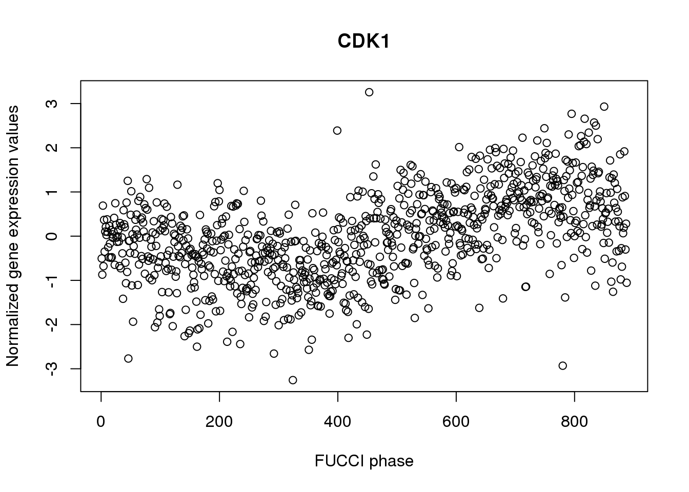
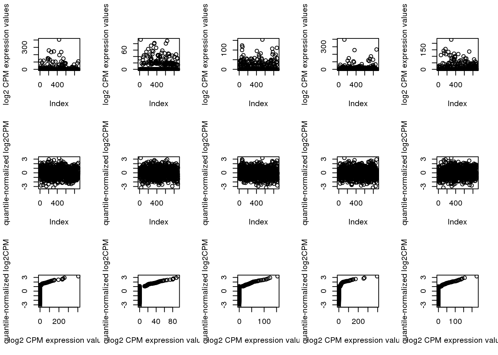
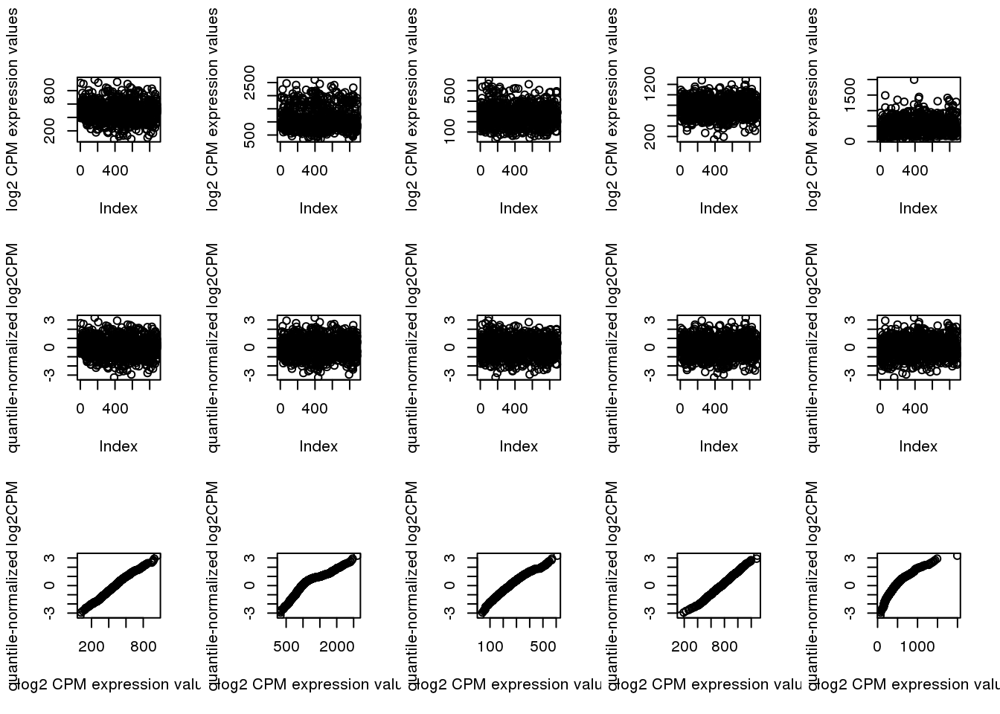
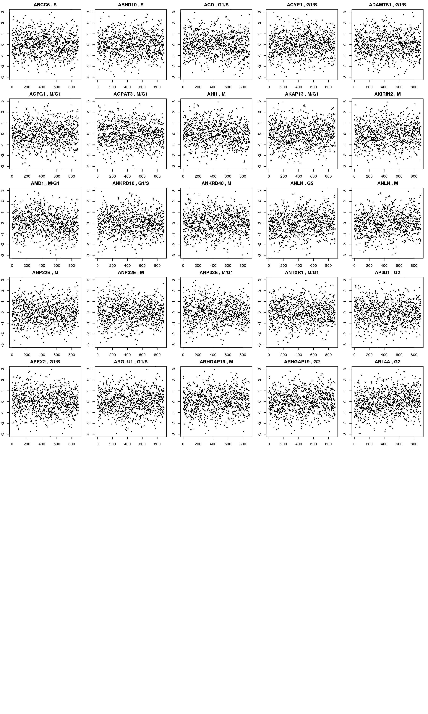
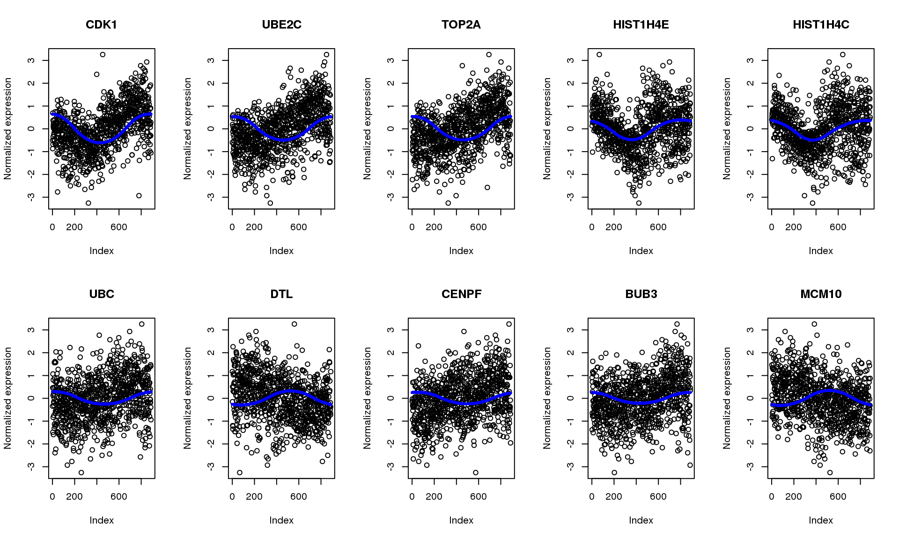
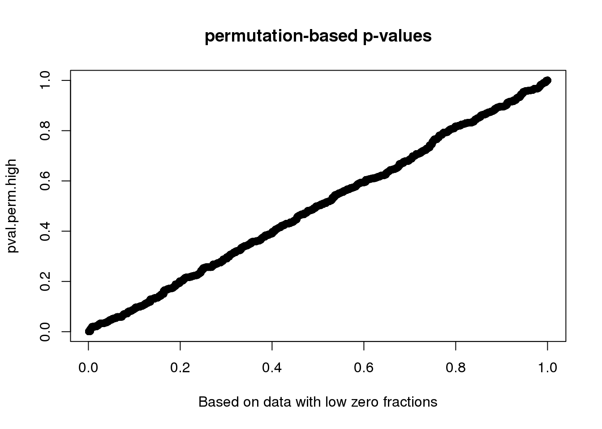

Estimate cyclic trend of gene expression levels
Joyce Hsiao
Last updated: 2020-01-26
Checks: 7 0
Knit directory: peco-paper/
This reproducible R Markdown analysis was created with workflowr (version 1.6.0). The Checks tab describes the reproducibility checks that were applied when the results were created. The Past versions tab lists the development history.
Great! Since the R Markdown file has been committed to the Git repository, you know the exact version of the code that produced these results.
Great job! The global environment was empty. Objects defined in the global environment can affect the analysis in your R Markdown file in unknown ways. For reproduciblity it’s best to always run the code in an empty environment.
The command set.seed(20190814) was run prior to running the code in the R Markdown file. Setting a seed ensures that any results that rely on randomness, e.g. subsampling or permutations, are reproducible.
Great job! Recording the operating system, R version, and package versions is critical for reproducibility.
Nice! There were no cached chunks for this analysis, so you can be confident that you successfully produced the results during this run.
Great job! Using relative paths to the files within your workflowr project makes it easier to run your code on other machines.
Great! You are using Git for version control. Tracking code development and connecting the code version to the results is critical for reproducibility. The version displayed above was the version of the Git repository at the time these results were generated.
Note that you need to be careful to ensure that all relevant files for the analysis have been committed to Git prior to generating the results (you can use wflow_publish or wflow_git_commit). workflowr only checks the R Markdown file, but you know if there are other scripts or data files that it depends on. Below is the status of the Git repository when the results were generated:
Ignored files:
Ignored: .Rhistory
Ignored: .Rproj.user/
Untracked files:
Untracked: code/note_wo_w_pca.R
Untracked: data/data_training_test/
Untracked: data/eset-filtered.rds
Untracked: data/fit.trend.perm.highmiss.rds
Untracked: data/fit.trend.perm.lowmiss.rds
Untracked: data/fit_diff_cyclone.rds
Untracked: data/fit_diff_oscope.rds
Untracked: data/fit_diff_peco.rds
Untracked: data/fit_diff_recat.rds
Untracked: data/fit_diff_seurat.rds
Untracked: data/intensity.rds
Untracked: data/leng2015_data.rds
Untracked: data/leng_fucci_oscope_29genes.rda
Untracked: data/leng_fucci_recat.rda
Untracked: data/leng_geneinfo.txt
Untracked: data/log2cpm.quant.rds
Untracked: data/macosko-2015.rds
Untracked: data/nmeth.3549-S2.xlsx
Untracked: data/ourdata_cyclone_NA18511.rds
Untracked: data/ourdata_cyclone_NA18855.rds
Untracked: data/ourdata_cyclone_NA18870.rds
Untracked: data/ourdata_cyclone_NA19098.rds
Untracked: data/ourdata_cyclone_NA19101.rds
Untracked: data/ourdata_cyclone_NA19160.rds
Untracked: data/ourdata_oscope_366genes.rda
Untracked: data/ourdata_peco_NA18511_top005genes.rds
Untracked: data/ourdata_peco_NA18855_top005genes.rds
Untracked: data/ourdata_peco_NA18870_top005genes.rds
Untracked: data/ourdata_peco_NA19098_top005genes.rds
Untracked: data/ourdata_peco_NA19101_top005genes.rds
Untracked: data/ourdata_peco_NA19160_top005genes.rds
Untracked: data/ourdata_phase_cyclone.rds
Untracked: data/ourdata_phase_seurat.rds
Untracked: data/ourdata_recat.rda
Untracked: data/sce-filtered.rds
Unstaged changes:
Modified: analysis/index.Rmd
Modified: code/run_seurat.R
Note that any generated files, e.g. HTML, png, CSS, etc., are not included in this status report because it is ok for generated content to have uncommitted changes.
These are the previous versions of the R Markdown and HTML files. If you’ve configured a remote Git repository (see ?wflow_git_remote), click on the hyperlinks in the table below to view them.
| File | Version | Author | Date | Message |
|---|---|---|---|---|
| Rmd | 12d976a | jhsiao999 | 2020-01-26 | estimate cyclic trends of gene expression levels |
Introduction
We used trendfilter to estimate cyclic trend of gene expression levels for each gene. We computed proportion of variance explained (PVE) by the cyclic trend for each gene and quantify the signficance of cycliic trend by permutation-based p-values.
Set-up
Load packages
library(SingleCellExperiment)
library(dplyr)
library(matrixStats)
library(edgeR)
library(circular)
library(peco)Load data
sce <- readRDS("data/sce-final.rds")
sce <- sce[grep("ENSG", rownames(sce)),]
pdata <- data.frame(colData(sce))
fdata <- data.frame(rowData(sce))
sce <- data_transform_quantile(sce)
log2cpm_quantNormed <- assay(sce, "cpm_quantNormed")
log2cpm_beforequant <- assay(sce, "cpm")
# derive and rotate cell cycle phase
pca <- prcomp(cbind(pdata$rfp.median.log10sum.adjust,
pdata$gfp.median.log10sum.adjust))
theta <- coord2rad(pca$x)
theta_final <- shift_origin(as.numeric(theta), 3*pi/4)
log2cpm_quantNormed <- log2cpm_quantNormed[,order(theta_final)]
log2cpm_beforequant <- log2cpm_beforequant[,order(theta_final)]
plot(log2cpm_quantNormed["ENSG00000170312",],
main = "CDK1", ylab = "Normalized gene expression values",
xlab = "FUCCI phase")
Evaluate data after standardizing expression
Map log2cpm expression to standard normal distribution. The transformation is non-linear. Sort N expression values from the largest to the smalles. General N standard normal random variable. For the non-zero expression value, find the correspnoding standard normal random variable that has the same quantile and subsitute the value with the corresponding normal random variable value. We then find the stanadard normal random variable values correspond to non-zero expression values and randomly assign these non-zero expression values to a standard normal random variable value.
For genes with relatively low fraction of deteted cells, this method allows to move the zero expression values closer to the non-zero expression value.
For genes with high fraction of undetected cells, this method creates a
Check genes with low/high fraction of undetected cells.
ii.high <- order(rowMeans(log2cpm_beforequant > 0), decreasing = F)[1:5]
par(mfcol=c(3,5))
for (i in 1:5) {
plot(log2cpm_beforequant[ii.high[i],], ylab = "log2 CPM expression values")
plot(log2cpm_quantNormed[ii.high[i],], ylab = "quantile-normalized log2CPM")
plot(x=log2cpm_beforequant[ii.high[i],], y=log2cpm_quantNormed[ii.high[i],],
ylab = "quantile-normalized log2CPM",
xlab = "log2 CPM expression values")
}
ii.low <- order(rowMeans(log2cpm_beforequant > 0), decreasing = T)[1:5]
par(mfcol=c(3,5))
for (i in 1:5) {
plot(log2cpm_beforequant[ii.low[i],], ylab = "log2 CPM expression values")
plot(log2cpm_quantNormed[ii.low[i],], ylab = "quantile-normalized log2CPM")
plot(x=log2cpm_beforequant[ii.low[i],], y=log2cpm_quantNormed[ii.low[i],],
ylab = "quantile-normalized log2CPM",
xlab = "log2 CPM expression values")
}
Check genes that we previously found to have cyclical patterns in Whitfield et al 2002.
The Whitfeld et al. 2002 list was downloaded from Macosko et al. 2015 (10.1016/j.cell.2015.05.002). Link to the file is https://www.ncbi.nlm.nih.gov/pmc/articles/PMC4481139/bin/NIHMS687993-supplement-supp_data_2.xlsx.
macosko <- readRDS("data/macosko-2015.rds")
log2cpm_quantNormed_macosko <- log2cpm_quantNormed[rownames(log2cpm_quantNormed) %in%macosko$ensembl,]
macosko_present <- macosko[macosko$ensembl %in% rownames(log2cpm_quantNormed),]
par(mfrow=c(8,5), mar = c(2,2,2,1))
for (g in seq_along(macosko_present$ensembl[1:25])) {
ind <- rownames(log2cpm_quantNormed_macosko) == macosko_present$ensembl[g]
plot(log2cpm_quantNormed_macosko[ind,], ylab = "Quantile-normalized log2CPM expression values",
main = paste(macosko_present$hgnc[g], ",", macosko_present$phase[g]),
pch = 16, cex=.6, ylim = c(-3,3))
}
Fit trendfilter to the data after quantile normalization
fit.trend <- mclapply(1:10, function(g) {
fit_trendfilter_generic(log2cpm_quantNormed[g,],
polyorder = 2)
}, mc.cores=25)
names(fit.trend) <- rownames(log2cpm_quantNormed)
saveRDS(fit.trend, "data/fit.quant.rds"))# load pre-computed resutls
fit.quant <- readRDS("data/fit.quant.rds")
pve <- sapply(fit.quant, "[[", "trend.pve")
summary(pve) Min. 1st Qu. Median Mean 3rd Qu. Max.
-0.0043839 0.0000798 0.0002166 0.0008961 0.0004973 0.3266288 Plot top 10 genes in PVE.
pve.genes <- names(pve)[order(c(pve), decreasing = T)[1:10]]
par(mfrow=c(2,5))
for (g in 1:length(pve.genes)) {
ii.g <- which(names(fit.quant)==pve.genes[g])
plot(log2cpm_quantNormed[rownames(log2cpm_quantNormed)==pve.genes[g],],
main = fdata[pve.genes[g],]$name, ylab = "Normalized expression")
points(fit.quant[[ii.g]]$trend.yy, pch=16, col = "blue", cex=.7)
}
quickily check top 100 enrichment for cell cycle genes.
enrich.order <- function(cutoffs, metrics, cyclegenes, allgenes) {
# out <- order(mad.ratio$smash.mad.ratio)
# cutoffs <- c(100, 200, 300)
cycle.rich <- sapply(cutoffs, function(x) {
which_top <- order(metrics, decreasing = T)[1:x]
sig.cycle <- sum(allgenes[which_top] %in% cyclegenes)/x
non.cycle <- sum(allgenes[-which_top] %in% cyclegenes)/(length(allgenes)-x)
cbind(as.numeric(sum(allgenes[which_top] %in% cyclegenes)),
sig.cycle/non.cycle)
})
colnames(cycle.rich) <- cutoffs
rownames(cycle.rich) <- c("nsig.genes.cycle", "fold.sig.vs.nonsig.cycle")
cycle.rich
}
macosko <- readRDS("data/macosko-2015.rds")
enrich.order(cutoffs = c(100, 200, 300),
metrics = pve, cyclegenes = macosko$ensembl,
allgenes = rownames(log2cpm_quantNormed)) 100 200 300
nsig.genes.cycle 54.00000 73.000000 86.00
fold.sig.vs.nonsig.cycle 12.78701 8.931377 7.16Compute permutation-based p-values
Consider two genes, one with large fraction of undetected cells and one with small fraction of undeteted cells. See if the null distribution is similar.
nperm <- 1000
# choose a gene with high fraction of missing and permute data
set.seed(17)
ii.frac.miss.high <- names(sample(which(rowMeans(log2cpm_beforequant==0) > .8),1))
fit.trend.highmiss <- mclapply(1:nperm, function(g) {
fit.trendfilter.generic(sample(log2cpm_quantNormed[ii.frac.miss.high,]),
polyorder = 2)
}, mc.cores=25)
saveRDS(fit.trend.highmiss, "data/fit.trend.perm.highmiss.rds")
# choose a gene with low fraction of missing and permute data
set.seed(31)
ii.frac.miss.low <- names(sample(which(rowMeans(log2cpm_beforequant==0) < .1),1))
fit.trend.lowmiss <- mclapply(1:nperm, function(g) {
fit.trendfilter.generic(sample(log2cpm_quantNormed[ii.frac.miss.low,]),
polyorder = 2)
}, mc.cores=25)
saveRDS(fit.trend.lowmiss, "data/fit.trend.perm.lowmiss.rds")Turns out the p-value based on permuted data is not the same for genes with low and high fraction of undetected cells.
# load pre-computed results
perm.lowmiss <- readRDS("data/fit.trend.perm.lowmiss.rds")
perm.highmiss <- readRDS("data/fit.trend.perm.highmiss.rds")
pve.perm.lowmiss <- sapply(perm.lowmiss, "[[", "trend.pve")
pve.perm.highmiss <- sapply(perm.highmiss, "[[", "trend.pve")
summary(pve.perm.lowmiss) Min. 1st Qu. Median Mean 3rd Qu. Max.
3.700e-08 4.998e-05 1.388e-04 2.821e-04 3.382e-04 1.617e-02 summary(pve.perm.highmiss) Min. 1st Qu. Median Mean 3rd Qu. Max.
1.340e-07 5.089e-05 1.389e-04 2.664e-04 3.403e-04 4.214e-03 par(mfrow=c(1,2))
hist(pve.perm.lowmiss, nclass=30,
main = "Fraction undetected < 10%", xlab = "p-value")
hist(pve.perm.highmiss, nclass=30,
main = "Fraction undetected > 80%", xlab = "p-value")
Compute p-value based on two different distributions. High consistency between the two.
Use permutated distribution based data with low missing value, which turns out to be more conservative.
B <- length(pve.perm.lowmiss)
pval.perm.low <- sapply(fit.quant, function(x) (1+sum(pve.perm.lowmiss > as.numeric(x$trend.pve)))/(1+B))
pval.perm.high <- sapply(fit.quant, function(x) (1+sum(pve.perm.highmiss > as.numeric(x$trend.pve)))/(1+B))
summary(pval.perm.low) Min. 1st Qu. Median Mean 3rd Qu. Max.
0.000999 0.163836 0.365634 0.415336 0.648352 1.000000 summary(pval.perm.high) Min. 1st Qu. Median Mean 3rd Qu. Max.
0.000999 0.150849 0.360639 0.411520 0.630370 1.000000 plot(x=pval.perm.low, y=pval.perm.high,
main = "permutation-based p-values",
xlab = "Based on data with low zero fractions",
yalb = "Based on data with high zero fractions")
sum(pval.perm.high < .001)[1] 278sum(pval.perm.low < .001)[1] 101Cell cycle signals in signficant cyclic genes.
which.sig <- pval.perm.low < .001
enrich.sigval <- function(cutoffs, metrics, cyclegenes, allgenes) {
# out <- order(mad.ratio$smash.mad.ratio)
# cutoffs <- c(100, 200, 300)
cycle.rich <- sapply(cutoffs, function(x) {
#which_top <- order(metrics, decreasing = T)[1:x]
sig.cycle <- sum(allgenes[metrics < x] %in% cyclegenes)/sum(metrics < x)
non.cycle <- sum(allgenes[metrics > x] %in% cyclegenes)/sum(metrics > x)
cbind(sum(metrics < x), as.numeric(sum(allgenes[metrics < x] %in% cyclegenes)),
sig.cycle/non.cycle)
})
colnames(cycle.rich) <- cutoffs
rownames(cycle.rich) <- c("nsig.genes", "nsig.genes.cycle", "fold.sig.vs.nonsig.cycle")
cycle.rich
}
enrich.sigval(cutoffs = c(.001, .005, .01), metrics=pval.perm.low,
cyclegenes = macosko$ensembl,
allgenes = rownames(log2cpm_quantNormed)) 0.001 0.005 0.01
nsig.genes 101.00000 476.000000 553.000000
nsig.genes.cycle 54.00000 99.000000 99.000000
fold.sig.vs.nonsig.cycle 12.65925 5.268908 4.502205sessionInfo()R version 3.5.1 (2018-07-02)
Platform: x86_64-pc-linux-gnu (64-bit)
Running under: Scientific Linux 7.4 (Nitrogen)
Matrix products: default
BLAS/LAPACK: /software/openblas-0.2.19-el7-x86_64/lib/libopenblas_haswellp-r0.2.19.so
locale:
[1] LC_CTYPE=en_US.UTF-8 LC_NUMERIC=C
[3] LC_TIME=en_US.UTF-8 LC_COLLATE=en_US.UTF-8
[5] LC_MONETARY=en_US.UTF-8 LC_MESSAGES=en_US.UTF-8
[7] LC_PAPER=en_US.UTF-8 LC_NAME=C
[9] LC_ADDRESS=C LC_TELEPHONE=C
[11] LC_MEASUREMENT=en_US.UTF-8 LC_IDENTIFICATION=C
attached base packages:
[1] parallel stats4 stats graphics grDevices utils datasets
[8] methods base
other attached packages:
[1] peco_0.99.10 circular_0.4-93
[3] edgeR_3.24.0 limma_3.38.3
[5] dplyr_0.8.0.1 SingleCellExperiment_1.4.1
[7] SummarizedExperiment_1.12.0 DelayedArray_0.8.0
[9] BiocParallel_1.16.0 matrixStats_0.55.0
[11] Biobase_2.42.0 GenomicRanges_1.34.0
[13] GenomeInfoDb_1.18.1 IRanges_2.16.0
[15] S4Vectors_0.20.1 BiocGenerics_0.28.0
loaded via a namespace (and not attached):
[1] viridis_0.5.1 genlasso_1.4
[3] viridisLite_0.3.0 foreach_1.4.4
[5] DelayedMatrixStats_1.4.0 assertthat_0.2.1
[7] vipor_0.4.5 GenomeInfoDbData_1.2.0
[9] yaml_2.2.0 pillar_1.3.1
[11] backports_1.1.2 lattice_0.20-38
[13] glue_1.3.0 digest_0.6.20
[15] promises_1.0.1 XVector_0.22.0
[17] colorspace_1.3-2 plyr_1.8.4
[19] htmltools_0.3.6 httpuv_1.4.5
[21] Matrix_1.2-17 pkgconfig_2.0.3
[23] zlibbioc_1.28.0 purrr_0.3.2
[25] mvtnorm_1.0-11 scales_1.0.0
[27] HDF5Array_1.10.1 whisker_0.3-2
[29] later_0.7.5 pracma_2.2.9
[31] git2r_0.26.1 tibble_2.1.1
[33] ggplot2_3.2.1 conicfit_1.0.4
[35] lazyeval_0.2.1 magrittr_1.5
[37] crayon_1.3.4 evaluate_0.12
[39] fs_1.3.1 doParallel_1.0.14
[41] MASS_7.3-51.1 beeswarm_0.2.3
[43] geigen_2.3 tools_3.5.1
[45] scater_1.10.1 stringr_1.3.1
[47] Rhdf5lib_1.4.3 munsell_0.5.0
[49] locfit_1.5-9.1 compiler_3.5.1
[51] rlang_0.4.0 rhdf5_2.26.2
[53] grid_3.5.1 RCurl_1.95-4.11
[55] iterators_1.0.12 igraph_1.2.2
[57] bitops_1.0-6 rmarkdown_1.10
[59] boot_1.3-20 gtable_0.2.0
[61] codetools_0.2-15 reshape2_1.4.3
[63] R6_2.4.0 gridExtra_2.3
[65] knitr_1.20 workflowr_1.6.0
[67] rprojroot_1.3-2 ggbeeswarm_0.6.0
[69] stringi_1.2.4 Rcpp_1.0.3
[71] tidyselect_0.2.5
sessionInfo()R version 3.5.1 (2018-07-02)
Platform: x86_64-pc-linux-gnu (64-bit)
Running under: Scientific Linux 7.4 (Nitrogen)
Matrix products: default
BLAS/LAPACK: /software/openblas-0.2.19-el7-x86_64/lib/libopenblas_haswellp-r0.2.19.so
locale:
[1] LC_CTYPE=en_US.UTF-8 LC_NUMERIC=C
[3] LC_TIME=en_US.UTF-8 LC_COLLATE=en_US.UTF-8
[5] LC_MONETARY=en_US.UTF-8 LC_MESSAGES=en_US.UTF-8
[7] LC_PAPER=en_US.UTF-8 LC_NAME=C
[9] LC_ADDRESS=C LC_TELEPHONE=C
[11] LC_MEASUREMENT=en_US.UTF-8 LC_IDENTIFICATION=C
attached base packages:
[1] parallel stats4 stats graphics grDevices utils datasets
[8] methods base
other attached packages:
[1] peco_0.99.10 circular_0.4-93
[3] edgeR_3.24.0 limma_3.38.3
[5] dplyr_0.8.0.1 SingleCellExperiment_1.4.1
[7] SummarizedExperiment_1.12.0 DelayedArray_0.8.0
[9] BiocParallel_1.16.0 matrixStats_0.55.0
[11] Biobase_2.42.0 GenomicRanges_1.34.0
[13] GenomeInfoDb_1.18.1 IRanges_2.16.0
[15] S4Vectors_0.20.1 BiocGenerics_0.28.0
loaded via a namespace (and not attached):
[1] viridis_0.5.1 genlasso_1.4
[3] viridisLite_0.3.0 foreach_1.4.4
[5] DelayedMatrixStats_1.4.0 assertthat_0.2.1
[7] vipor_0.4.5 GenomeInfoDbData_1.2.0
[9] yaml_2.2.0 pillar_1.3.1
[11] backports_1.1.2 lattice_0.20-38
[13] glue_1.3.0 digest_0.6.20
[15] promises_1.0.1 XVector_0.22.0
[17] colorspace_1.3-2 plyr_1.8.4
[19] htmltools_0.3.6 httpuv_1.4.5
[21] Matrix_1.2-17 pkgconfig_2.0.3
[23] zlibbioc_1.28.0 purrr_0.3.2
[25] mvtnorm_1.0-11 scales_1.0.0
[27] HDF5Array_1.10.1 whisker_0.3-2
[29] later_0.7.5 pracma_2.2.9
[31] git2r_0.26.1 tibble_2.1.1
[33] ggplot2_3.2.1 conicfit_1.0.4
[35] lazyeval_0.2.1 magrittr_1.5
[37] crayon_1.3.4 evaluate_0.12
[39] fs_1.3.1 doParallel_1.0.14
[41] MASS_7.3-51.1 beeswarm_0.2.3
[43] geigen_2.3 tools_3.5.1
[45] scater_1.10.1 stringr_1.3.1
[47] Rhdf5lib_1.4.3 munsell_0.5.0
[49] locfit_1.5-9.1 compiler_3.5.1
[51] rlang_0.4.0 rhdf5_2.26.2
[53] grid_3.5.1 RCurl_1.95-4.11
[55] iterators_1.0.12 igraph_1.2.2
[57] bitops_1.0-6 rmarkdown_1.10
[59] boot_1.3-20 gtable_0.2.0
[61] codetools_0.2-15 reshape2_1.4.3
[63] R6_2.4.0 gridExtra_2.3
[65] knitr_1.20 workflowr_1.6.0
[67] rprojroot_1.3-2 ggbeeswarm_0.6.0
[69] stringi_1.2.4 Rcpp_1.0.3
[71] tidyselect_0.2.5